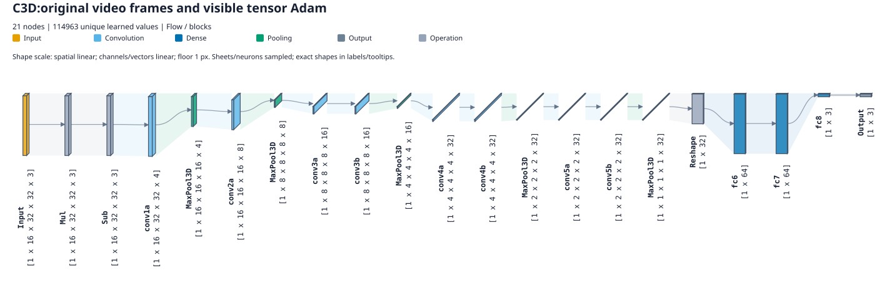
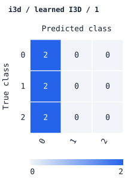
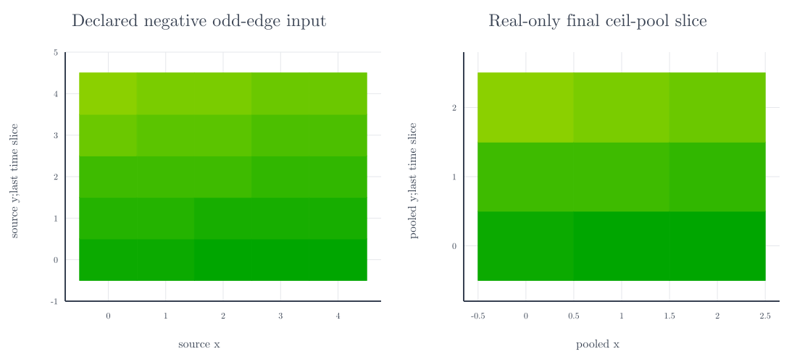
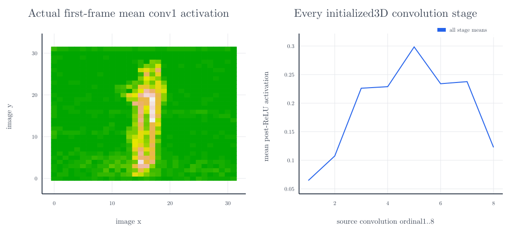
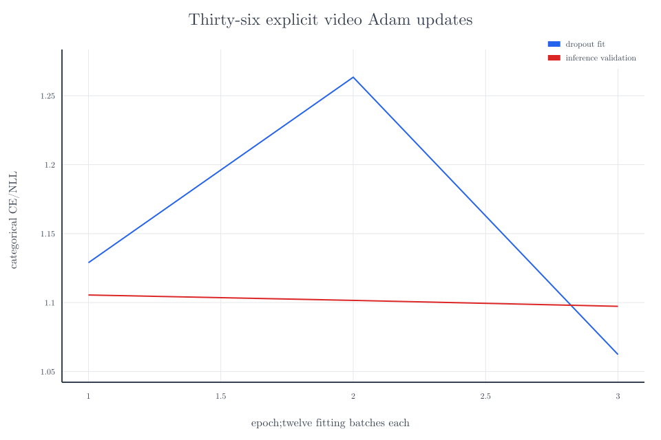
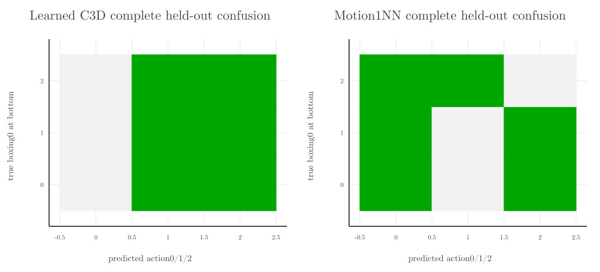
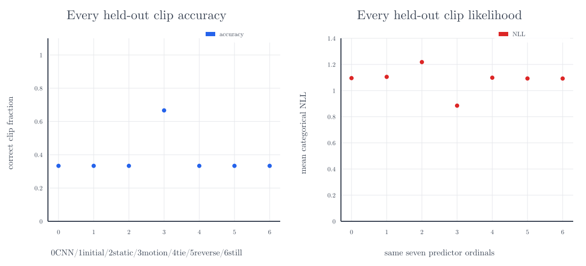

C3D:original video frames and visible tensor Adam
Abstract
Genuine person-disjoint KTH clips feed all eight3Dconvolutions and five ceil pools. Explicit tensor Adam,complete frame previews and every held-out error expose the limited short fit alongside static and motion references.
Source example: examples/cpp/source/nn/1_convolutional_neural_networks/1.10_3d_and_video_convolutions/c3d.cpp.
The method
Preserve original annotated video/person/segment identities,resize actual frames with tensors,and execute the complete compact C3D graph. Show every Adam update,select on validation NLL,restore22 learned arrays for RGB-only inference,and compare complete held-out/temporal-control results.
The concept diagram below is drawn by dm::graphics::Diagram. Its editable C++
source is the complete block below; regeneration uses the same datamunge toolchain
as the numerical examples. Exports consume the saved local SVG.
#include <dm/dm.hpp>
int main() {
std::filesystem::create_directories("build");
dm::graphics::Diagram diagram;
diagram.node("n0", {0.0, 0}, "Original video\n segments");
diagram.node("n1", {5.2, 0}, "Eight3Dconvs\n and ceil pools");
diagram.node("n2", {10.4, 0}, "Visible Adam\n and every held-out clip");
diagram.edge("n0", "n1").edge("n1", "n2");
diagram.save_svg("build/c3d_concept.svg");
}
Executed tensor architecture
This figure executes the inference configuration shown in the code, using a zero-valued shape probe without fitting or loading a checkpoint. Named stage boundaries group whole subgraphs where available; other nodes retain functional-layer detail. Exact batch-inclusive shapes and reachable parameter totals come from the trace. Shared linear scales map spatial dimensions and channel counts to blocks; the one-pixel visibility floor is disclosed in the legend. Labels use compact monospace text, rotate counterclockwise and sit beside their own glyphs. Arrows flow left to right; wide diagrams scroll at native size on the website.
#include <dm/dm.hpp>
int main() {
namespace n = dm::nn;
namespace m = n::models;
n::set_num_threads(2);
std::filesystem::create_directories("build");
const m::C3dConfig c{4, 64, 3, 32};
n::ParameterStore p(643);
n::Module architecture_model(
[&](const n::Tensor& image) { return m::C3d(p, image, c).logits; },
"C3D:original video frames and visible tensor Adam");
n::ModelPlotOptions options;
options.style = n::ModelPlotStyle::Flow;
options.detail = n::ModelPlotDetail::Blocks;
options.labels = {.type = n::ModelPlotLabel::NameAndShape, .size = 12, .wrap = 24};
options.spacing = {.layer = 24, .lane = 12, .label = 8, .margin = 20};
options.sizing.spatial_size = 96;
options.sizing.channel_size = 42;
options.sizing.minimum_extent = 1;
options.opacity = .8;
const auto diagram = architecture_model.plot(n::zeros({1, 16, 32, 32, 3}), options);
diagram.save_svg("build/c3d_architecture.svg");
std::print(
"{} displayed nodes; {} reachable learned values.\n",
diagram.nodes().size(),
diagram.parameter_count());
}21 displayed nodes; 114963 reachable learned values.

Original annotated KTH video frames and person separation
The original KTH action videos/00sequences.txt are preserved through the pinned public mirror revision7076149bdbeff8d70003a68d6291fd080db44683 because the original server is unavailable. Classes0/1/2 are boxing/handclapping/handwaving. Use scenario1,people1..4fit,5validation,6test:18original AVI videos. Keep the first two annotated inclusive segments per video and16unique integer frames evenly spaced across each segment. This gives24fit/6validation/6test clips, balanced within each pool. A segment is not an independent person.
#include <dm/dm.hpp>
int main() {
const std::filesystem::path cache = dm::datasets::data_home();
dm::datasets::prepare_example_data("video", (cache / "action_video").string());
}FFmpeg only decodes source frames;the tensor helper performs Float32 legacy bilinear32px resize and/255. Original160x120 RGB PNGs,AVI hashes,source frame indices,segment bounds and person/video identities stay in the manifest. Grayscale KTH recordings have three replicated decoded RGB channels. These are real observed frames,not synthesized motion. The custom six-person, one-test-person protocol is not a KTH/Sports1M benchmark result.
Show every frame of all six held-out clips below,one clip per row,16frames left to right. Source identities and true actions are printed for every row.
#include <dm/dm.hpp>
int main() {
namespace n = dm::nn;
namespace m = n::models;
n::set_num_threads(2);
std::filesystem::path cache;
if (const auto *p = std::getenv("DATAMUNGE_DATA_DIR"))
cache = p;
else if (const auto *p = std::getenv("XDG_CACHE_HOME"))
cache = std::filesystem::path(p) / "datamunge/datasets";
else
cache = std::filesystem::path(std::getenv("HOME")) / ".cache/datamunge/datasets";
std::filesystem::path root = cache / "action_video";
if (const auto *p = std::getenv("DATAMUNGE_VIDEO_DIR"))
root = p;
else
dm::datasets::prepare_example_data("video", root.string());
const auto pools = m::LoadVideo(root);
const auto &fit = pools[0];
const auto &validation = pools[1];
const auto &test = pools[2];
std::print("| gallery row | action0boxing/1clapping/2waving | person | original video | "
"original segment |\n|---:|---:|---:|---:|---:|\n");
const auto labels = test.labels.to_vector<int>(), people = test.person.to_vector<int>(),
videos = test.video.to_vector<int>(), segments = test.segment.to_vector<int>();
for (int row = 0; row < test.size(); ++row)
std::print("| {} | {} | {} | {} | {} |\n", row, labels[row], people[row], videos[row],
segments[row]);
const auto delta =
n::mean(n::abs(n::slice_axis(fit.rgb, 1, 1, 16) - n::slice_axis(fit.rgb, 1, 0, 15))
.to(n::DType::Float64),
{2, 3, 4});
auto plot = dm::graphics::RPlot::create();
plot.lines(n::arange(1, 16).to_vector<double>(), n::mean(delta, {0}).to_vector<double>(),
"all fitting clips", {37, 99, 235})
.title("Actual mean selected-frame change")
.x_label("successive selected-frame pair")
.y_label("mean absolute RGB difference");
plot.save_svg("build/c3d_data_motion.svg");
std::filesystem::create_directories("figures");
std::filesystem::copy_file("build/c3d_data_motion.svg", "figures/c3d_data_motion.svg",
std::filesystem::copy_options::overwrite_existing);
n::save_image_grid(test.rgb.reshape({96, 32, 32, 3}), "build/c3d_data.png", 16, 0, 1, 2, 0,
2);
}| gallery row | action0boxing/1clapping/2waving | person | original video | original segment |
|---|---|---|---|---|
| 0 | 0 | 6 | 5 | 0 |
| 1 | 0 | 6 | 5 | 1 |
| 2 | 1 | 6 | 11 | 0 |
| 3 | 1 | 6 | 11 | 1 |
| 4 | 2 | 6 | 17 | 0 |
| 5 | 2 | 6 | 17 | 1 |


Caffe-ceil pooling keeps negative odd-edge samples
Equal kernel/stride2 SAME pooling pads only the trailing odd edge and ignores padded values,matching explicit negative-infinity trailing padding followed by VALID pooling. The first pool uses1x2x2 to preserve all16time steps;later pools use2x2x2. A signed fixture makes accidental zero-padding maxima visible. Its exact maximum and every input adjoint are checked in the native suite.
#include <dm/dm.hpp>
int main() {
namespace n = dm::nn;
namespace m = n::models;
auto x = (-n::arange(1, 76)).reshape({1, 3, 5, 5, 1});
x.requires_grad_(true);
const auto y = m::C3dPool(x, false);
const auto gradient = n::grad(n::sum(y), {x})[0];
const auto explicit_pad =
n::pad(x, {{0, 0}, {0, 1}, {0, 1}, {0, 1}, {0, 0}}, n::PadMode::Constant, -INFINITY);
const auto oracle = n::max_pool3d(explicit_pad, 2, 2, n::Padding::Valid);
const auto parity = n::max(n::abs(y - oracle));
if (parity.item() != 0 || n::max(y).item() >= 0)
return 1;
std::print("Signed3x5x5 input->{},all pooled parity {:.3g};first-pool shape {};all selected "
"input adjoints sum {}.\n",
y.shape(), parity.item(), m::C3dPool(x, true).shape(), n::sum(gradient));
auto a = n::plot_tensor_map(n::select(n::select(n::select(x, 0, 0), 0, 2), 2, 0), -75, 0),
b = n::plot_tensor_map(n::select(n::select(n::select(y, 0, 0), 0, 1), 2, 0), -75, 0);
a.title("Declared negative odd-edge input")
.x_label("source x")
.y_label("source y;last time slice");
b.title("Real-only final ceil-pool slice")
.x_label("pooled x")
.y_label("pooled y;last time slice");
auto layout = dm::graphics::RLayout::create(1, 2);
layout.add(a).add(b).size(1100, 500).fit_panels().save_svg("build/c3d_pool.svg");
}Signed3x5x5 input->[1, 2, 3, 3, 1],all pooled parity 0;first-pool shape [1, 3, 3, 3, 1];all selected input adjoints sum float32[] 18.

Complete eight-convolution graph, scaled only in width and image size
Scale RGB to[-1,1]. Eight SAME3x3x3 He-uniform/ReLU convolutions use width multiples1/2/4/4/8/8/8/8,pools after1/2/4/6/8,then two Glorot dense/ReLU layers with keep.5dropout and a linear classifier. No batch normalization. Compact base4/FC64/image32/classes3 has114963values and22learned tensors. Full base64/FC4096/image112/classes487 has79991015values and22tensors; the native suite actually executes its forward and all gradients at full size. These are source initialization/input/head adaptations,without pretraining.
Actual initialized fitting-clip activations below show stage geometry and mean activation magnitude. They are not trained action explanations.
#include <dm/dm.hpp>
int main() {
namespace n = dm::nn;
namespace m = n::models;
n::set_num_threads(2);
std::filesystem::path cache;
if (const auto *p = std::getenv("DATAMUNGE_DATA_DIR"))
cache = p;
else if (const auto *p = std::getenv("XDG_CACHE_HOME"))
cache = std::filesystem::path(p) / "datamunge/datasets";
else
cache = std::filesystem::path(std::getenv("HOME")) / ".cache/datamunge/datasets";
std::filesystem::path root = cache / "action_video";
if (const auto *p = std::getenv("DATAMUNGE_VIDEO_DIR"))
root = p;
else
dm::datasets::prepare_example_data("video", root.string());
const auto pools = m::LoadVideo(root);
const auto &fit = pools[0];
const auto &validation = pools[1];
const auto &test = pools[2];
const m::C3dConfig c{4, 64, 3, 32};
n::ParameterStore p(643);
{
n::NoGradGuard guard;
m::C3d(p, n::zeros({1, 16, 32, 32, 3}), c);
}
auto predict = [&](const n::Tensor &rgb) {
n::NoGradGuard guard;
std::vector<n::Tensor> parts;
for (std::int64_t start = 0; start < rgb.size(0); start += 2)
parts.push_back(
m::C3d(p,
n::slice_axis(rgb, 0, start, std::min<std::int64_t>(start + 2, rgb.size(0))),
c)
.logits);
return n::concat(parts, 0);
};
const auto out = m::C3d(p, n::slice_axis(fit.rgb, 0, 0, 1), c);
std::vector<n::Tensor> energy;
std::print("| layer | actual compact convolution shape |\n|---:|---|\n");
for (int i = 0; i < 8; ++i) {
std::print("| {} | {} |\n", i + 1, out.conv[i].shape());
energy.push_back(n::mean(out.conv[i].to(n::DType::Float64)));
}
std::print("Flatten {},dense {}/{},head {},{}values/{}leaves.\n", out.flat.shape(),
out.fc6.shape(), out.fc7.shape(), out.logits.shape(), p.count(), p.size());
const auto map = n::mean(n::select(out.conv[0], 0, 0), {3});
auto a = n::plot_tensor_map(n::select(map, 0, 0), 0, n::max(map).item()),
b = dm::graphics::RPlot::create();
a.title("Actual first-frame mean conv1 activation").x_label("image x").y_label("image y");
b.lines(n::arange(1, 9).to_vector<double>(), n::stack(energy, 0).to_vector<double>(),
"all stage means", {37, 99, 235})
.title("Every initialized3D convolution stage")
.x_label("source convolution ordinal1..8")
.y_label("mean post-ReLU activation");
auto layout = dm::graphics::RLayout::create(1, 2);
layout.add(a).add(b).size(1100, 500).fit_panels().save_svg("build/c3d_features.svg");
}| layer | actual compact convolution shape |
|---|---|
| 1 | [1, 16, 32, 32, 4] |
| 2 | [1, 16, 16, 16, 8] |
| 3 | [1, 8, 8, 8, 16] |
| 4 | [1, 8, 8, 8, 16] |
| 5 | [1, 4, 4, 4, 32] |
| 6 | [1, 4, 4, 4, 32] |
| 7 | [1, 2, 2, 2, 32] |
| 8 | [1, 2, 2, 2, 32] |
Flatten [1, 32],dense [1, 64]/[1, 64],head [1, 3],114963values/22leaves.

Parameter-free static and motion nearest-neighbor references
Each reference retains24fitting observations. Compute4x4spatial cell means of either all16colors or15absolute selected-frame differences,48features. Accumulate in Double,round each feature to Float32 as the source does,then use fitting-population Double standard deviations clamped1e-6. A shared mean cancels in pairwise distances. First fitting row wins equal distances.
These references have no learned leaves or optimizer. Numeric preprocessing and distances are tensors;query labels do not enter prediction. The native suite compares every fitting feature and every held-out reference prediction with retained literal source host code. Print complete held-out class counts.
#include <dm/dm.hpp>
int main() {
namespace n = dm::nn;
namespace m = n::models;
n::set_num_threads(2);
std::filesystem::path cache;
if (const auto *p = std::getenv("DATAMUNGE_DATA_DIR"))
cache = p;
else if (const auto *p = std::getenv("XDG_CACHE_HOME"))
cache = std::filesystem::path(p) / "datamunge/datasets";
else
cache = std::filesystem::path(std::getenv("HOME")) / ".cache/datamunge/datasets";
std::filesystem::path root = cache / "action_video";
if (const auto *p = std::getenv("DATAMUNGE_VIDEO_DIR"))
root = p;
else
dm::datasets::prepare_example_data("video", root.string());
const auto pools = m::LoadVideo(root);
const auto &fit = pools[0];
const auto &validation = pools[1];
const auto &test = pools[2];
std::print("| reference | accuracy | stable NLL | all true-row confusion counts "
"|\n|---|---:|---:|---|\n");
std::vector<n::Tensor> maps;
for (bool motion : {false, true}) {
const auto features = m::VideoFeatures(fit, motion);
const auto z = m::VideoNearest(fit, test, motion);
const auto score = m::ScoreSequenceClassifier(z, test.labels);
std::print("| {} | {:.6f} | {:.6f} | {} |\n",
motion ? "absolute motion1NN" : "static color1NN", score.accuracy.item(),
score.nll.item(), score.confusion);
maps.push_back(features.to(n::DType::Float64));
}
auto a = n::plot_tensor_map(n::reverse(maps[0], {0}), 0, n::max(maps[0]).item()),
b = n::plot_tensor_map(n::reverse(maps[1], {0}), 0, n::max(maps[1]).item());
a.title("All24fitting static reference features")
.x_label("all48 spatial cell/color features")
.y_label("original fitting row0 at bottom");
b.title("All24fitting motion reference features")
.x_label("all48 spatial cell/color features")
.y_label("original fitting row0 at bottom");
auto layout = dm::graphics::RLayout::create(1, 2);
layout.add(a).add(b).size(1100, 500).fit_panels().save_svg("build/c3d_reference.svg");
}| reference | accuracy | stable NLL | all true-row confusion counts |
|---|---|---|---|
| static color1NN | 0.333333 | 1.218111 | int64[3, 3] [[2, 0, 0], [2, 0, 0], [2, 0, 0]] |
| absolute motion1NN | 0.666667 | 0.884778 | int64[3, 3] [[0, 2, 0], [0, 2, 0], [0, 0, 2]] |

Every one of36Adam updates is visible
Warm22learned leaves before tensor Adam(.001). Use source initialization643, dropout631,batch-order647,batch2,three epochs over24fitting clips:36updates. An explicit two-clip dropout derivative probe advances the same generator before training and checks every learned leaf. Every batch displays the full forward,categorical CE,gradient and optimizer step. Validation Double NLL selects the saved arrays;the complete fitting inference loss is a separate probe.
#include <dm/dm.hpp>
int main() {
namespace n = dm::nn;
namespace m = n::models;
n::set_num_threads(2);
std::filesystem::path cache;
if (const auto *p = std::getenv("DATAMUNGE_DATA_DIR"))
cache = p;
else if (const auto *p = std::getenv("XDG_CACHE_HOME"))
cache = std::filesystem::path(p) / "datamunge/datasets";
else
cache = std::filesystem::path(std::getenv("HOME")) / ".cache/datamunge/datasets";
std::filesystem::path root = cache / "action_video";
if (const auto *p = std::getenv("DATAMUNGE_VIDEO_DIR"))
root = p;
else
dm::datasets::prepare_example_data("video", root.string());
const auto pools = m::LoadVideo(root);
const auto &fit = pools[0];
const auto &validation = pools[1];
const auto &test = pools[2];
const m::C3dConfig c{4, 64, 3, 32};
n::ParameterStore p(643);
{
n::NoGradGuard guard;
m::C3d(p, n::zeros({1, 16, 32, 32, 3}), c);
}
auto predict = [&](const n::Tensor &rgb) {
n::NoGradGuard guard;
std::vector<n::Tensor> parts;
for (std::int64_t start = 0; start < rgb.size(0); start += 2)
parts.push_back(
m::C3d(p,
n::slice_axis(rgb, 0, start, std::min<std::int64_t>(start + 2, rgb.size(0))),
c)
.logits);
return n::concat(parts, 0);
};
n::Generator dropout(631);
const auto initial = m::ScoreSequenceClassifier(predict(fit.rgb), fit.labels).nll;
const auto untrained = predict(test.rgb);
const auto probe = m::VideoRows(fit, {0, 1});
const auto checked = m::C3d(p, probe.rgb, c, true, &dropout, .5);
for (const auto &g :
n::grad(n::sparse_softmax_cross_entropy(checked.logits, probe.labels), p.parameters()))
if (!n::all(n::is_finite(g)).item<bool>() || n::sum(n::square(g)).item() <= 0)
return 1;
n::OptimizerConfig options;
options.kind = n::OptimizerKind::Adam;
n::Optimizer adam(p, .001, options);
n::BatchOrder order(fit.size(), 2, 647);
double best = INFINITY;
int selected = 0, updates = 0;
std::vector<n::Tensor> history;
std::print("| epoch | dropout fitting CE | validation NLL |\n|---:|---:|---:|\n");
for (int epoch = 1; epoch <= 3; ++epoch) {
order.begin_epoch();
auto average = n::zeros({}, n::DType::Float64);
for (;;) {
const auto rows = order.next();
if (rows.empty())
break;
const auto d = m::VideoRows(fit, rows);
const auto out = m::C3d(p, d.rgb, c, true, &dropout, .5);
const auto loss = n::sparse_softmax_cross_entropy(out.logits, d.labels);
average = average +
loss.detach().to(n::DType::Float64) * double(rows.size()) / double(fit.size());
adam.step(n::grad(loss, p.parameters()));
++updates;
}
const auto val =
m::ScoreSequenceClassifier(predict(validation.rgb), validation.labels).nll;
if (val.item() < best) {
best = val.item();
selected = epoch;
n::NamedTensors arrays;
for (std::size_t i = 0; i < p.size(); ++i)
arrays.push_back({p.names()[i], p.parameters()[i]});
n::save_npz("build/c3d_best.npz", arrays);
}
history.push_back(n::stack({average, val}, 0));
std::print("| {} | {:.6f} | {:.6f} |\n", epoch, average.item(), val.item());
}
for (const auto &[name, value] : n::load_npz("build/c3d_best.npz"))
p.set(name, value);
const auto fitted = m::ScoreSequenceClassifier(predict(fit.rgb), fit.labels).nll;
n::save_npz("build/c3d_outputs.npz",
{{"logits", predict(test.rgb)}, {"untrained", untrained}});
std::print("{} explicit Adam updates;selected epoch {},validation {:.6f};fixed fitting "
"inference NLL {:.6f}->{:.6f}.\n",
updates, selected, best, initial.item(), fitted.item());
const auto h = n::stack(history, 0);
auto plot = dm::graphics::RPlot::create();
plot.lines(n::arange(1, 4).to_vector<double>(), n::select(h, 1, 0).to_vector<double>(),
"dropout fit", {37, 99, 235})
.lines(n::arange(1, 4).to_vector<double>(), n::select(h, 1, 1).to_vector<double>(),
"inference validation", {220, 38, 38})
.title("Thirty-six explicit video Adam updates")
.x_label("epoch;twelve fitting batches each")
.y_label("categorical CE/NLL");
plot.save_svg("build/c3d_training.svg");
}| epoch | dropout fitting CE | validation NLL |
|---|---|---|
| 1 | 1.128928 | 1.105507 |
| 2 | 1.263408 | 1.101591 |
| 3 | 1.062339 | 1.097290 |
36 explicit Adam updates;selected epoch 3,validation 1.097290;fixed fitting inference NLL 1.106528->1.096081.

Fresh RGB-only restoration,temporal controls and all six errors
Restore a fresh22-leaf store with no optimizer,labels or source identity in forward. Check exact saved/repeated inference,single/batch agreement and all arrays unchanged. Reverse frame order and repeat the first actual frame16times to test temporal dependence;these are explicit controls,not additional real data. Compare all six held-out clips with both fixed1NN memories,initialization and balanced tie-class0. Display every true action,prediction and confusion count. The one held-out person and six clips cannot establish benchmark accuracy.
#include <dm/dm.hpp>
int main() {
namespace n = dm::nn;
namespace m = n::models;
n::set_num_threads(2);
std::filesystem::path cache;
if (const auto *p = std::getenv("DATAMUNGE_DATA_DIR"))
cache = p;
else if (const auto *p = std::getenv("XDG_CACHE_HOME"))
cache = std::filesystem::path(p) / "datamunge/datasets";
else
cache = std::filesystem::path(std::getenv("HOME")) / ".cache/datamunge/datasets";
std::filesystem::path root = cache / "action_video";
if (const auto *p = std::getenv("DATAMUNGE_VIDEO_DIR"))
root = p;
else
dm::datasets::prepare_example_data("video", root.string());
const auto pools = m::LoadVideo(root);
const auto &fit = pools[0];
const auto &validation = pools[1];
const auto &test = pools[2];
const m::C3dConfig c{4, 64, 3, 32};
n::ParameterStore p(643);
{
n::NoGradGuard guard;
m::C3d(p, n::zeros({1, 16, 32, 32, 3}), c);
}
auto predict = [&](const n::Tensor &rgb) {
n::NoGradGuard guard;
std::vector<n::Tensor> parts;
for (std::int64_t start = 0; start < rgb.size(0); start += 2)
parts.push_back(
m::C3d(p,
n::slice_axis(rgb, 0, start, std::min<std::int64_t>(start + 2, rgb.size(0))),
c)
.logits);
return n::concat(parts, 0);
};
for (const auto &[name, value] : n::load_npz("build/c3d_best.npz"))
p.set(name, value.clone());
std::vector<n::Tensor> before;
for (const auto &v : p.parameters())
before.push_back(v.clone());
n::Tensor saved, untrained;
for (const auto &[name, value] : n::load_npz("build/c3d_outputs.npz")) {
if (name == "logits")
saved = value;
else
untrained = value;
}
const auto z = predict(test.rgb);
const auto parity =
n::maximum(n::max(n::abs(z - saved)), n::max(n::abs(z - predict(test.rgb))));
const auto single =
n::max(n::abs(predict(n::slice_axis(test.rgb, 0, 0, 1)) - n::slice_axis(z, 0, 0, 1)));
const auto reversed = predict(n::reverse(test.rgb, {1}).contiguous());
const auto still = predict(n::tile(n::slice_axis(test.rgb, 1, 0, 1), {1, 16, 1, 1, 1}));
const auto order = n::sum(n::abs(z.to(n::DType::Float64) - reversed.to(n::DType::Float64)));
const auto motion = n::sum(n::abs(z.to(n::DType::Float64) - still.to(n::DType::Float64)));
bool immutable = true;
for (std::size_t i = 0; i < before.size(); ++i)
immutable = immutable && n::all(n::equal(before[i], p.parameters()[i])).item<bool>();
if (parity.item() > 1e-6 || single.item() > 1e-6 || order.item() <= 1e-7 ||
motion.item() <= 1e-7 || !immutable)
return 1;
std::print("Fresh RGB restore/repeat {:.3g};single/batch {:.9g} within1e-6;22leaves "
"immutable:{};reverse/repeat-first changes {:.9f}/{:.9f}.\n",
parity.item(), single.item(), immutable, order.item(), motion.item());
const auto static_nn = m::VideoNearest(fit, test, false),
motion_nn = m::VideoNearest(fit, test, true);
std::vector<n::Tensor> accuracy, nll;
std::print("\n| predictor | accuracy | macroF1 | NLL | all recalls | all true-row confusion "
"counts |\n|---|---:|---:|---:|---|---|\n");
for (const auto &item :
std::vector<std::pair<std::string, n::Tensor>>{{"learned C3D", z},
{"untrained", untrained},
{"static1NN", static_nn},
{"motion1NN", motion_nn},
{"class0 tie", n::zeros_like(z)},
{"reversed control", reversed},
{"still control", still}}) {
const auto score = m::ScoreSensor(item.second, test.labels, 3);
std::print("| {} | {:.6f} | {:.6f} | {:.6f} | {} | {} |\n", item.first, score.accuracy,
score.macro_f1, score.nll, n::from_vector(score.recall),
n::from_vector(score.confusion, {3, 3}));
const auto base = m::ScoreSequenceClassifier(item.second, test.labels);
accuracy.push_back(base.accuracy);
nll.push_back(base.nll);
}
{
n::ConfusionMatrix current_counts(3);
current_counts.add(test.labels, n::argmax(z, 1));
n::save_npz("build/c3d_heldout_"+std::string("0")+".npz",{{"truth",test.labels},{"logits",z},{"counts",current_counts.to_tensor()}});
}
const auto predicted = n::argmax(z, 1).to_vector<int>(),
truth = test.labels.to_vector<int>();
std::print("\n| held-out row | true action | learned action |\n|---:|---:|---:|\n");
for (int row = 0; row < 6; ++row)
std::print("| {} | {} | {} |\n", row, truth[row], predicted[row]);
auto a = dm::graphics::RPlot::create(), b = dm::graphics::RPlot::create();
a.points(n::arange(0, 7).to_vector<double>(), n::stack(accuracy, 0).to_vector<double>(),
"accuracy", {37, 99, 235})
.title("Every held-out clip accuracy")
.x_label("0CNN/1initial/2static/3motion/4tie/5reverse/6still")
.y_label("correct clip fraction")
.y_limits(0, 1.1);
b.points(n::arange(0, 7).to_vector<double>(), n::stack(nll, 0).to_vector<double>(), "NLL",
{220, 38, 38})
.title("Every held-out clip likelihood")
.x_label("same seven predictor ordinals")
.y_label("mean categorical NLL")
.y_limits(0, 1.4);
auto metrics = dm::graphics::RLayout::create(1, 2);
metrics.add(a).add(b).size(1100, 500).fit_panels().save_svg("build/c3d_metrics.svg");
std::filesystem::create_directories("figures");
std::filesystem::copy_file("build/c3d_metrics.svg", "figures/c3d_metrics.svg",
std::filesystem::copy_options::overwrite_existing);
a = n::plot_tensor_map(
n::reverse(m::ScoreSequenceClassifier(z, test.labels).confusion.to(n::DType::Float64),
{0}),
0, 2);
b = n::plot_tensor_map(
n::reverse(
m::ScoreSequenceClassifier(motion_nn, test.labels).confusion.to(n::DType::Float64),
{0}),
0, 2);
a.title("Learned C3D complete held-out confusion")
.x_label("predicted action0/1/2")
.y_label("true boxing0 at bottom");
b.title("Motion1NN complete held-out confusion")
.x_label("predicted action0/1/2")
.y_label("true boxing0 at bottom");
auto confusion = dm::graphics::RLayout::create(1, 2);
confusion.add(a).add(b).size(1100, 500).fit_panels().save_svg("build/c3d_confusion.svg");
}Fresh RGB restore/repeat 0;single/batch 0 within1e-6;22leaves immutable:true;reverse/repeat-first changes 0.097135583/0.115546001.
| predictor | accuracy | macroF1 | NLL | all recalls | all true-row confusion counts |
|---|---|---|---|---|---|
| learned C3D | 0.333333 | 0.166667 | 1.095499 | float64[3] [1, 0, 0] | int32[3, 3] [[2, 0, 0], [2, 0, 0], [2, 0, 0]] |
| untrained | 0.333333 | 0.166667 | 1.104972 | float64[3] [0, 1, 0] | int32[3, 3] [[0, 2, 0], [0, 2, 0], [0, 2, 0]] |
| static1NN | 0.333333 | 0.166667 | 1.218111 | float64[3] [1, 0, 0] | int32[3, 3] [[2, 0, 0], [2, 0, 0], [2, 0, 0]] |
| motion1NN | 0.666667 | 0.555556 | 0.884778 | float64[3] [0, 1, 1] | int32[3, 3] [[0, 2, 0], [0, 2, 0], [0, 0, 2]] |
| class0 tie | 0.333333 | 0.166667 | 1.098612 | float64[3] [1, 0, 0] | int32[3, 3] [[2, 0, 0], [2, 0, 0], [2, 0, 0]] |
| reversed control | 0.333333 | 0.166667 | 1.092720 | float64[3] [1, 0, 0] | int32[3, 3] [[2, 0, 0], [2, 0, 0], [2, 0, 0]] |
| still control | 0.333333 | 0.166667 | 1.092372 | float64[3] [1, 0, 0] | int32[3, 3] [[2, 0, 0], [2, 0, 0], [2, 0, 0]] |
| held-out row | true action | learned action |
|---|---|---|
| 0 | 0 | 0 |
| 1 | 0 | 0 |
| 2 | 1 | 0 |
| 3 | 1 | 0 |
| 4 | 2 | 0 |
| 5 | 2 | 0 |


Annotated confusion counts
The following program replots the current held-out evaluation counts printed in the
predictor tables above. It reproduces those recorded measurements without refitting
or re-evaluating the model. ConfusionMatrix::from_counts owns the integer tensor
counts and save_svg labels every cell. True class zero is the *top* row and
predicted class zero the left column. Counts are exact; colors use the observed
count range. Source class meanings remain those declared for the dataset above.
#include <dm/dm.hpp>
int main() {
namespace n = dm::nn;
std::filesystem::create_directories("build");
{
n::Tensor counts;
for (const auto &[key, value] : n::load_npz("build/c3d_heldout_0.npz"))
if (key == "counts") counts = value;
const auto matrix = n::ConfusionMatrix::from_counts(counts);
matrix.save_svg(
"build/c3d_confusion_api_0.svg",
{.title = "c3d / learned C3D / 1", .cell_size = 52, .font_size = 13});
std::print("Current evaluation 1: 6 observations; accuracy {:.6f}.\n", matrix.accuracy());
}
}Current evaluation 1: 6 observations; accuracy 0.333333.
Verification and limits
Six native tests check all164signed3Dkernel/bias/input host finite differences, negative odd-edge pool values/adjoints,the actual full79991015-scalar forward and every22learned derivative,all1769472decoded/resized source frame pixels and source identities,every static/motion reference feature/neighbor/metric, and invalid dropout/geometry contracts. Public examples compile/run and the original full-check/three-epoch workflow passes. Validation selects epoch 3 with NLL 1.097290. The checkpoint predicts boxing on all six held-out clips, for 2/6 accuracy, mean NLL 1.095499, and macro F1 of 0.166667. Both accuracies can change substantially with one clip. The data preview,complete errors and unchanged references constrain any claim beyond implementation correctness and temporal computation sensitivity.
Regenerate adjacent views from this run
#include <dm/dm.hpp>
int main(){std::filesystem::copy_file("build/c3d_data_motion.svg","build/export_c3d_data_motion.svg",std::filesystem::copy_options::overwrite_existing);}#include <dm/dm.hpp>
int main(){std::filesystem::copy_file("build/c3d_metrics.svg","build/export_c3d_metrics.svg",std::filesystem::copy_options::overwrite_existing);}Conclusion
The full architecture and every numeric contract execute successfully,but the short custom fit does not outperform the motion reference. Original clips and complete per-clip errors make the report reproducible without a benchmark claim.
References
- [Tran et al.(2015),Learning Spatiotemporal Features with3DConvolutional Networks](https://arxiv.org/abs/1412.0767).
- [Original KTH action dataset and annotations](https://www.csc.kth.se/cvap/actions/).
- [Pinned original-video mirror](https://huggingface.co/datasets/AtharvaPote/KTH-Action-Recognition-mirror/tree/7076149bdbeff8d70003a68d6291fd080db44683).